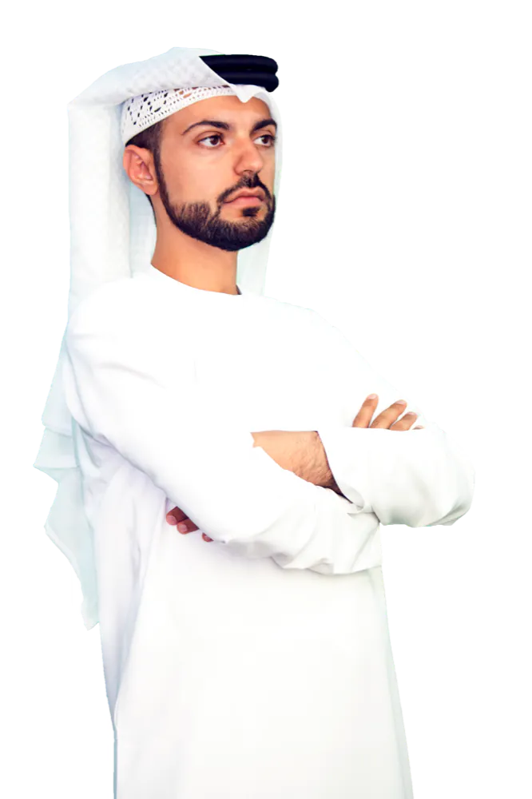

Faisal Alzarooni
Founder and lead criminal defence lawyer. Born and raised in Dubai.

Two influences
Faisal grew up in Dubai. He credits two things with shaping his career: his mother, Safia Alzarooni, and the city itself. His mother taught him to stand up for what he believed in, to be tough and determined but caring, and to be loyal to family. Dubai showed him what opportunity and constant change look like.
“A winner never quits and a quitter never wins.”
That line has stayed with him since high school. When people tell him how hard it is to practise criminal defence in Dubai, he says it is nothing compared to working out in the hot sun.
From Al Ain to New York
He studied law at the UAE University in Al Ain. At 24 he joined the UAE Mission to the United Nations in New York as a legal officer, where he spent almost three years on International Court of Justice and International Criminal Court matters, many of them human rights cases.
Asked why he chose criminal defence, he answers without hesitation: “I wanted to help people.” He adds that the risk in the work was part of the draw.
Today
He leads a team of criminal defence lawyers, advocates, investigators, researchers and administrators from the firm's office in Clover Bay Tower, Business Bay, and is the designated legal counsel of the Austrian Embassy in Abu Dhabi.
How the firm works
Counsellors, strategists, trial lawyers
We represent people at every stage of criminal proceedings, for misdemeanours and felonies, from the Public Prosecution to the Supreme Court, in local and federal courts across the UAE.
Honest and ethical, always
We deal honestly and fairly with our clients, the other side, the courts and one another. Prosecutors and judges know us for it.
Straight communication
Open, direct and timely contact at every stage. Calls and emails are returned promptly, and families are kept informed.
Referrals we are proud of
Much of our work comes from clients, opposing counsel and judges who refer people to us.
Appeals
Direct appeals and post-conviction petitions, with a record of winning appeals in the Dubai courts and at the UAE Supreme Court.
After the case
Setting aside or reducing convictions, ending probation, and certificates of rehabilitation or pardons. We stay in touch with clients as new needs come up.
Speak to Faisal's team today.
+971 52 115 5768*Free case evaluations are limited to cases officially registered with a UAE Public Prosecution and do not include bounced-cheque cases.